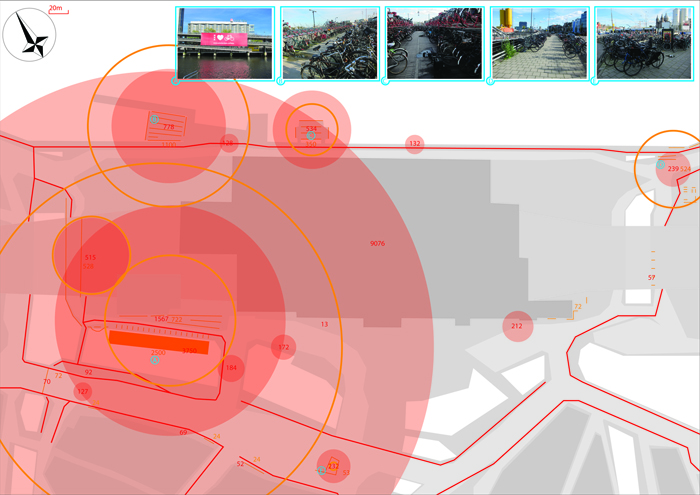
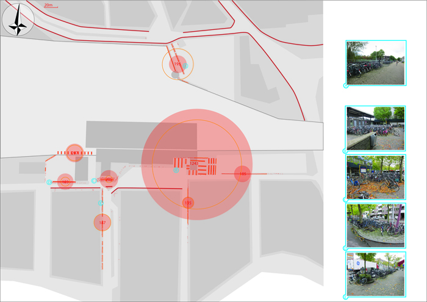
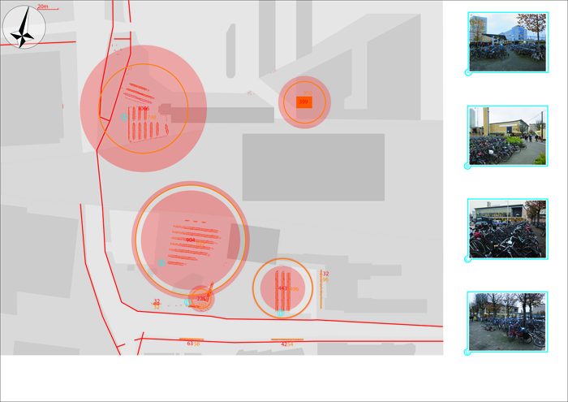
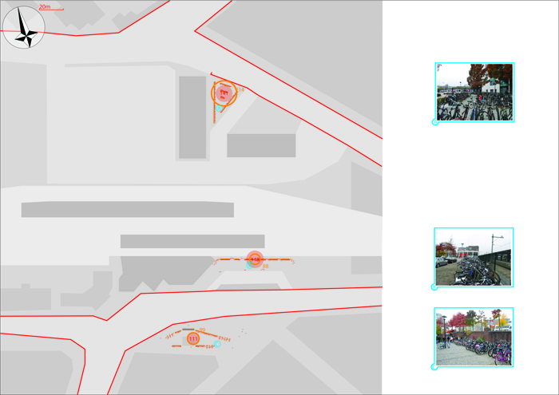
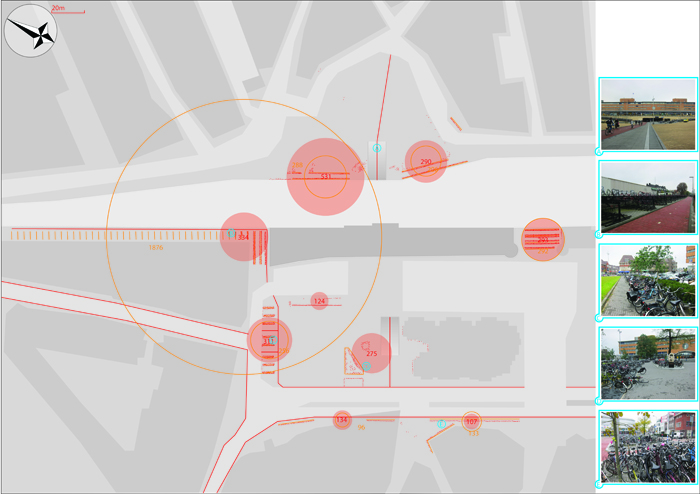
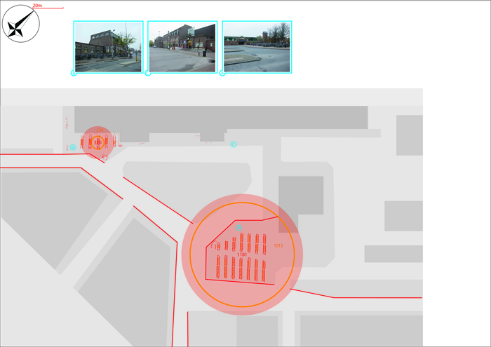
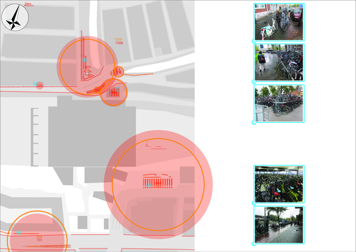
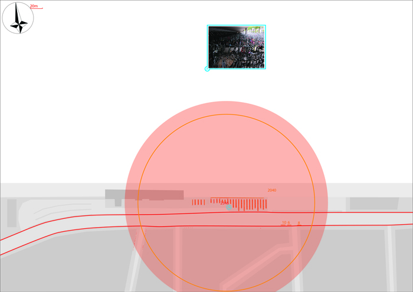
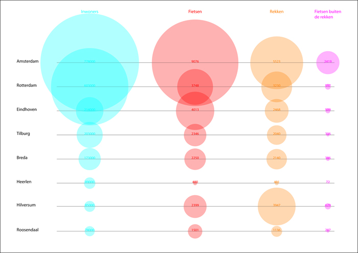
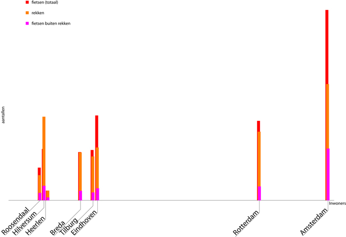

The Station Maps
Amsterdam:

This assignement was to ivestigate a number of given train stations and make a map of a subject of choice.
In the discussions that we had before the investigation the subject of the masses of bikes came up a few times.
Especially the impact it has on the station.
I was curious about this and chose to map the bikes to get a certain grip on this phenomenon.
Looking at the maps a few may become apparent.
For instance the enormous numbers of bikes around Amsterdam station.
And the difference in how full the different parking areas are.
Also how few bikes are parked at Heerlen.
That Eindhoven has more bikes than Rotterdam though Rotterdam has nearly three times as many inhabitants.
Hilversum has bicycle racks for more bicycles than Rotterdam has bikes even though it has over seven times less inhabitants.
And this is mainly because there is an enormous amount of bicycle racks in a curious dead end street to the west of the station (on the southside).
But they are all empty.
This is because the small street is rather creepy so you wouldn't want to park your kike there.
I guess this is an example of good intentions on the part of the architects of this area that fail to reach the users.
There are still many overcrowded parking spaces and many bikes outside the parking spaces.
I must remark that the numbers of parked bikes all represent single afternoons on avarage working day.
So the numbers should be seen more as rough indications than solid figures.
The numbers of bikes will be constantly growing and falling with the day and night, weekdays, weekends and hollidays etc.

Breda:
Eindhoven:
Heerlen:
Hilversum:
Roosendaal:
Rotterdam:
Tilburg:
Comparison:
The comparison from a different perspective:
